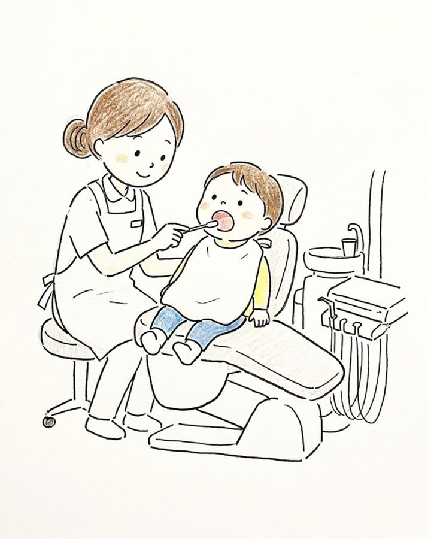
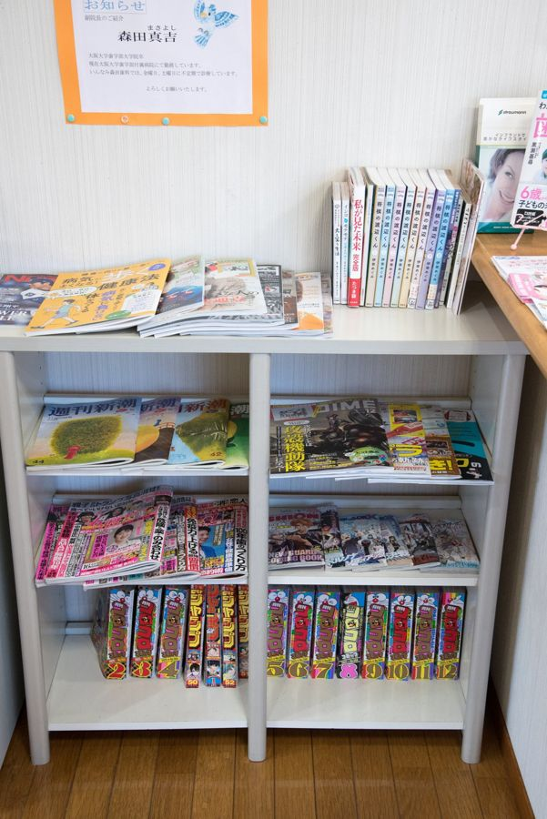

新居浜で、
子どもの歯と歯並びを
見守る歯医者さん。
いんなみ森田歯科は、新居浜市繁本町の歯科医院です。むし歯の予防と治療、歯並びやあごの成長のチェック、子どもの矯正まで、成長に合わせて長く通っていただけます。

新居浜市は、18歳まで保険診療の窓口負担がありません
新居浜市の子ども医療費助成により、18歳になった年度の3月31日まで、保険診療の自己負担分が助成されます。むし歯がなくても、定期検診を気軽に受けやすい制度です。
受診の際は、保険証（マイナ保険証）と受給者証をお持ちください。自費の治療（矯正など）は別途費用が発生します。
むし歯を防いで、成長を見守る
3〜4か月に1回の定期検診で、小さなむし歯や歯ぐきの状態に加え、生え変わりや歯並び、あごの成長の様子を確認します。フッ素塗布やシーラントでむし歯を予防します。
歯並びが気になったら
あごが成長している時期は、選べる方法が広がる場合があります。プレオルソ（マウスピース型の装置）や1期治療など、お子さんの状態に合わせた方法と費用を、検査のうえでご説明します。相談は無料です。
保護者の方によく聞かれること
何歳から通えばいい？
最初の歯が生えたころに一度。その後は3〜4か月ごとの検診がおすすめです。
歯医者を怖がって泣きます
診療台に座る、お口を見るなど、慣れることから始めます。無理には進めません。
矯正はいつ相談すれば？
前歯の生え変わりが始まる6〜8歳ごろに一度。相談は無料です。費用と流れ

通いやすさについて
- 土曜日も診療しています（17時まで）
- 医院前とその周辺に駐車場が10台あります
- 待合室に雑誌やマンガを置いています
- はじめての歯医者さんでも、まずは診療台やお口の中を見ることに慣れるところから始めます
- お子さんの通院に合わせて、保護者の方の検診・クリーニングも予約できます